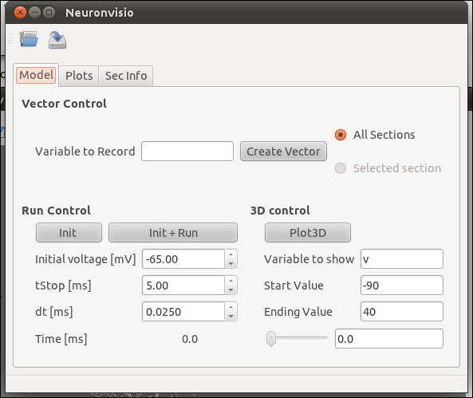

Getting Started¶
How does it work¶
You need to use Neuronvisio from an ipython console started with the qt4 thread switch:
ipython -q4thread
To use the NeuronVisio module, after you have installed you should import with:
from neuronvisio.controls import Controls
controls = Controls() # starting the GUI
The Control class run the main loop of the application with all the GUI activities in its own thread. The console is ready for input so you can enter your command to the prompt as you would do normally when using _NEURON.
How to integrate NeuronVisio with your code¶
The integration is rather simple and you can use either the python or the hoc scripts that you already have.
Python integration¶
If you have a model written in python, just import the module on top of your script. The simple example (in the example directory) give you an idea how to do it.
A classical template is:
from neuronvisio.controls import Controls
from neuron import h
controls = Controls() # starting the GUI
# Your model here
Hoc Intergration¶
You have to load your hoc script using the python interface of _NEURON. The pyramidal example gives an idea how to integrate existent _NEURON model with it.
A classical template is:
from neuronvisio.controls import Controls
from neuron import h
controls = Controls() # starting the GUI
h.load_file('path/to/my_model.hoc')
NeuronVisio features¶
Visualization¶
To visualize you model after you loaded you have to click the Plot3d button.
The 3D window will open showing your model:

How to rotate¶
Hold the left button and move the mouse.
How to zoom¶
Use your mouse’s wheel or the right button of the mouse.
How to move¶
Hold the wheel down and move the mouse.
Plotting the simulation results¶
Creating the vectors¶
To plot the simulation’s results you first have to create a Vector (or more than one) to record the variable that you are interested in.
For example if you are interested in the voltage you have to insert v in the ‘Variable to record` and click Create Vector.
Run the simulation¶
The simulation can be run clicking on the Init & Run button. It will run until the tstop.
Plotting the simulation¶
To plot the results click on the tab ‘Plots’ and select the variable from the section you want to plot. Then click Plot.
If you want to plot more variables in one go hold Ctrl and select as many as you want, then click Plot
If you want to insert the legend just select the legend box
{kind=link}
Investigate the section parameters¶
Select a section (Just click over it) and the section info will be displayed in the Sec Info Tab.